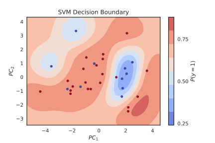

Final project 02806 Social Data Analysis and Visualization
Explainer pageBeing accused or suspected on the basis of race, ethnicity or religion is neither fun nor legal. Unfortunately, the practice of racial profiling has been an increasingly popular term in the U.S. In 2015, 1,134 people in Austin, TX filed complaints related to racial profiling by local enforcement. And the problems persists; in 2017 The state of Texas passed a bill, commanding all police officers to search anyone who "looks like an immigrant". In this project we examine relationships between geographic occurences of traffic stops by Austin law enforcement and demographics of certain zip-codes to find patterns of racial profiling. This way, we can tell whether you are more likely to get profiled in certain parts of town than others, based on your race.
Traffic Stops Visualized
Let's take a look at all traffic stops occured in each zip-area. Below in the left pane is an interactive map of Austin. The map is subdivided into zip-codes with colors indicating total number of stops in each area. Obviously, the most interesting areas are the ones with higher stop frequencies, but feel free to check out the more "rural" areas too. Clicking on a zip-area centers the selected area in the right pane. Here, each stop is visualized with a dot. When an area is selected, the bar chart below changes accordingly, and shows the proportions of each race stopped in the area. The colors on the bar chart indicates whether the officer on duty knew or didn't knew the suspects race before stop. You can also hover above each bar to see excactly how many stops it accounts for. Try it out!- In some areas, the distribtions of race are roughly equal between black, hispanics and whites.
- In others such as , more than 70% of all stops are of white people
- Downtown areas such as , and has a higher proportion of blacks stopped than the other areas.
- Suburban areas has fewer arrests than downtown, which isn't really surprising considering the higher traffic downtown.
Analysis: Does Race Really Matter?
To do no analysis whether or not race actually mattered in trafic stops, we generated a racial profiling index: The racial profiling index goes over 1 when more non whites are getting arrested in a zip code compared to how many non whites that are living there and the same for whites when it is under 1.
We would like to investigate whether this index can be predicted by socio-economic factors, since it can be an explanation for some of the misalignment.
The racial profiling index goes over 1 when more non whites are getting arrested in a zip code compared to how many non whites that are living there and the same for whites when it is under 1.
We would like to investigate whether this index can be predicted by socio-economic factors, since it can be an explanation for some of the misalignment.
We have chosen to turn this given problem into a classifcation problem (racial profiling index > 1 and racial profiling index < 1 as classes), and since this problem is influenced by a lot of factors, a non-linear classifier seems the most adequite. The classifcation method separating the classes beautifully is called Support Vector Machine (SVM) Classifcation, where a chosen kernel (as KDE) is used for constructing a non-linear hyperlane for separation. In this case, the kernel is the gaussian radial basis function.
Since the supplementary housing data is rather complex in its dimensionality, a Principal Component Analysis is made to reduce the dimensionality down to 2D whilst keeping the most information explained by variance possible. The two prinipal axes are a linear combination of the original data, and the first axis in particular has a very interesting behavior:
Low median income, low median house value, high unemployment rate and high population below the poverty level constitues in a high value on the axis, and virsa versa for a low value. Thus, the higher the first principal component the lower socio-economic status for the zip code.
Now to the figure!  Red observations (racial profiling index > 1) are not that dense, and spread all over the domain. Thus, predicting the racial profiling index increase cannot be immediatly predicted from socio-economic factors. However, blue observations (racial profiling index < 1) are very dense with a relatively high first principal compenent. Thus, whites being racially discriminated against by the APD cannot be concluded from this data, or at least directly, since socio-economic status has a large effect.